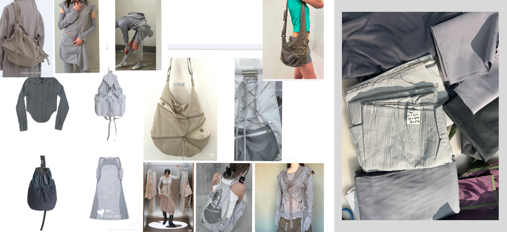

Camera Bag
Fall 2025
Challenge:
Traditional camera bags are often bulky, utilitarian, and slow to access, making them inconvenient for casual outdoor wandering where quick camera use and lightweight carrying are important.
Design:
Designed a lightweight camera bag that functions as both a practical carrier and a decorative wearable. A two-part structure separates the camera from an outer storage compartment, allowing flexible organization. The camera hooks securely to the inner bag to prevent accidental dropping while enabling quick removal and return during use. The bag was developed over four weeks through iterative making, with all materials and hardware self-sourced.
Outcome:
Creates a more efficient and visually appealing way to carry a camera, supporting spontaneous photography while maintaining comfort, security, and aesthetic wearability.

1.Idea Exploration
Design Requirements

This design originated from my experience of purchasing a camera over the summer and not having a bag that allowed for quick access. Existing options on the market tend to prioritize either heavy protection—with excessive padding and closures—or minimal solutions like simple lanyards that leave the camera exposed. This gap informed a design that balances accessibility, protection, and lightness.
Ideation through sketching

Initial sketches investigated different modes of access, comparing full removal versus partial exposure of the camera. The final design centers on an inner bag with a rigid ring opening that enables quick, seamless access. Two detachable pocketed flaps wrap around the bag, providing both protection and additional storage while maintaining flexibility and lightness.
2.Prototyping

After defining the core components, I focused on developing the bag’s external form. Guided by a mood board of grey/white futuristic techwear, I explored elements such as fabric scrunching, draping, and layered textures. These ideas were translated through a series of sketches to test how soft, dynamic surfaces could coexist with a structured function.

After sourcing a range of relevant fabrics, I began prototyping to evaluate how different materials interact. Through hands-on testing, I explored combinations of texture, flexibility, and structure to determine how the fabrics behave together and support the intended form and function.

3.Final Production

Final product

Different arrangements

Hook on feature

Assembly


Bill of materials

Orthographic drawing and techpack